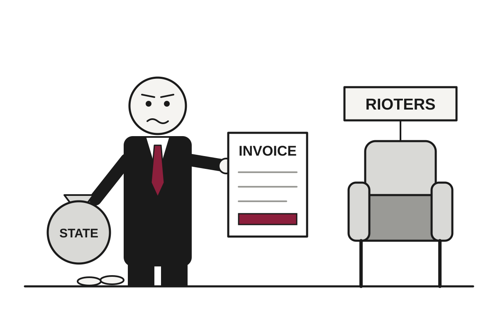

France Answers Weekend of Riots With Curfews, a Restitution Law and a Refused Resignation
After more than 2,500 arrests and damage estimated in the hundreds of millions of euros, the government is giving mayors curfew powers and promising that rioters will pay the bill.
The wire said: Curfew imposed in parts of central Paris and other cities after rioting across France · BBC World

Catch up
Protests in France began last month with students demanding better school conditions and have widened to cover fuel prices, the cost of living and public services. Over the weekend, riots and looting spread across Paris, Marseille and smaller towns.Why it matters
Shop owners face possible ruin, residents in affected cities face evening movement limits, and the government is entering a presidential election year with its law-and-order credentials under inspection.French authorities have imposed overnight curfews in parts of central Paris and several other cities after a weekend of rioting and looting, the BBC reported. In Paris, the curfew runs from 23:00 to 06:00 in the Place de la République and the Les Halles shopping area. Partial restrictions on young people or gatherings were announced for Marseille, Bordeaux, Nice, Lyon and Lille. The protest movement began with students asking for better schools, which is a reasonable request that has now acquired a fire brigade.
Interior Minister Laurent Nuñez admitted that police had "lost control" in some cities. Translation: the people responsible for control reported, with admirable candor, that they did not have it. He offered his resignation on Sunday, and President Emmanuel Macron refused, citing, according to the Élysée Palace, "the need for continued command of law enforcement." The same statement told Nuñez to be transparent about what Macron called "intelligence and foresight failings." The minister has thus been kept in his job so that he can explain why he was not doing it well.
Prime Minister Sébastien Lecornu, after a crisis meeting on Monday, said mayors would be given power to impose curfews "where they need." He did not say where that would be, which leaves mayors to decide whether their town qualifies as a problem. He also did not rule out a state of emergency, which is the legal mechanism by which a government gives itself more options while saying it is not yet using them.
The government's financial plan has two parts. First, money will be set aside to help affected areas recover, along with a partial unemployment fund for people who cannot work because of the unrest. Second, Lecornu said a law would ensure that "those who have damaged properties will have to pay," with the recovery funded by those behind the violence. The state pays first and invoices afterward, a sequence that works best when the debtors can be identified. To that end, 200 investigators are reviewing CCTV footage for possible ringleaders.
The scale of the damage is considerable. The head of France's Chambers of Commerce and Industry, Alain Di Crescenzo, told RTL that more than 2,000 shops and businesses were directly affected, with damage in the "hundreds of millions of euros." The chamber's Marseille president, Jean-Luc Chauvin, told the BBC that shop owners there are in "deep distress" and fear for their survival. In Limoges, rioters burned down the 19th-century city hall, whose clock tower and roof collapsed. Officials say more than 2,500 people were arrested, and about 1,000 police officers were injured. AFP reported that one demonstrator's hand was blown off by a police crowd-control grenade.
Some of the looted goods then appeared for sale online, which two government ministers noted. Vinted said selling or soliciting stolen goods is "strictly prohibited" and that it has removed listings and increased monitoring. It is a rare case in which the resale market had to explain that it does not wish to sell the goods at issue.
Politics is now doing what it does when things burn. Lecornu alleged that some groups "want to create chaos in our country up until the presidential elections," and some politicians have blamed the left-wing La France Insoumise. Its leader, Jean-Luc Mélenchon, who will run next year, told the prime minister to "prove his accusation" or "apologise, shut up, and stop stoking disorder." The US, China and Germany have all issued travel cautions. Watch whether the curfews hold, whether the state of emergency stays only a possibility, and whether the restitution law finds anyone to collect from.
Satire based on reporting by BBC World, NPR World. Read the originals for the straight version.